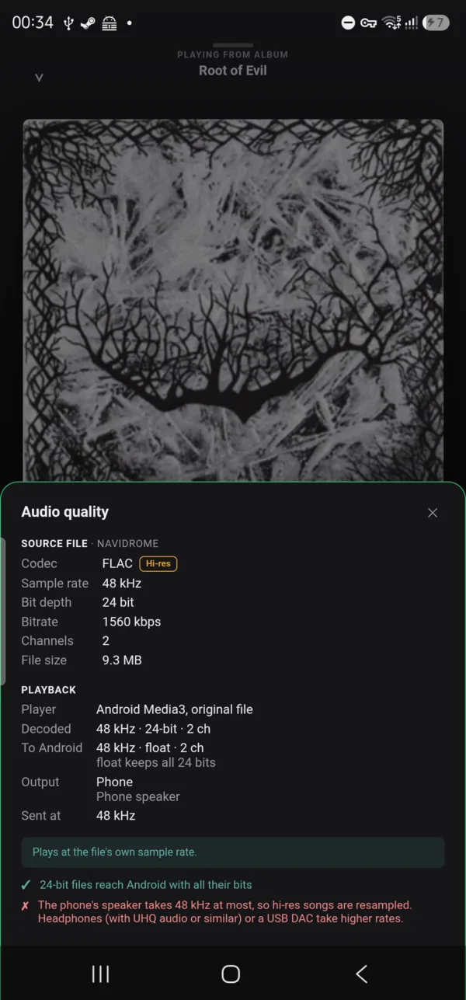

Hi-fi-läge
Bitperfekt.
Och den kan bevisa det.
De flesta spelare lämnar varje låt till systemet i en och samma frekvens och låter det sampla om resten. Gerudo skickar varje låt till din DAC precis som filen gjordes, och bevakar hela vägen för att säga till om något ändrade den.
Det tysta problemet
Ditt 24/96-album spelades i 48 kHz.
På en Linux-dator kör ljudsystemet i en enda frekvens, oftast 48 kHz, och gör tyst om allt till den. En CD-rip i 44,1 kHz, ett hi-res-album i 96 eller 192: allt samplas om, varje gång.
- Varje låt i sin egen frekvensMed hi-fi-läget på ställer Gerudo om din DAC för varje låt: 44,1 för en CD-rip, 192 för en hi-res-master. En kort tystnad mellan låtar i olika frekvenser är enda tecknet.
- Andra appar fortsätter spelaAviseringar och videor fungerar som vanligt; det är de som görs om nu, inte din musik.
- Inget lämnas kvarPaus behåller frekvensen. Stoppa eller avsluta, så får systemet tillbaka sin vanliga frekvens.

Inget audiofilt gissande
Den säger till när det inte är bitperfekt. Och varför.
Gerudo läser av vad som verkligen når din DAC, frekvens, format och enhet, och jämför med filen. Står något i vägen säger den vad.
- "Inte bitperfekt: volymen är 70 %"Mjukvaruvolym ändrar samplingarna, så den säger det. Höj volymen i Gerudo och sänk den på DAC:en eller förstärkaren, så försvinner varningen.
- Testa din DACEn knapp spelar tystnad och ställer om din DAC genom varje frekvens från 44,1 till 384 kHz, och minns sedan vilka den faktiskt tog emot. Hi-fi-läget använder bara dem.
- Panelen bakom märketTryck på valfritt kvalitetsmärke för hela bilden: filen, vad som avkodades, vad systemet fick och vilken frekvens utgången kör i.

Mer än dina egna filer
Samma omsorg för Spotify, och för mobilen.
Spotify, förlustfritt
På datorn spelas Spotify inne i Gerudo, aldrig genom en webbläsare. Hi-fi-läget för Spotify ställer DAC:en på 44,1 kHz, frekvensen Spotify strömmar i, och kvalitetspanelen visar vad Spotify faktiskt skickar, till exempel förlustfri FLAC.
24 bitar på Android
Mobilen spelar också originalfilen och lämnar musik i 24 bitar till Android utan att kapa den till 16. Kontroller upptäcker vad Android gör sedan, som en högtalare som bara tar 48 kHz.
Alltid originalfiler
Din server skickar filen du rippade, aldrig en konverterad kopia: ingen omkodning, ingen "normalisering", inga övertoningar ovanpå. Det märket säger är det som spelas.
Pågår: bitperfekt uppspelning från mobilen till en USB-DAC är planerad. I dag levererar mobilen varje bit till Android, och kontrollerna säger rakt ut vad Android gör efter det.